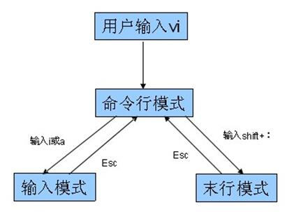

git-day01
命令行概述
dos（window）
shell（Linux--csh ksh bash）
常用命令
pwd (Print Working Directory) 查看当前目录
cd (Change Directory) 切换目录，如 cd /etc
ls (List) 查看当前目录下内容，如 ls -al
mkdir (Make Directory) 创建目录，如 mkdir blog
touch 创建文件，如 touch index.html
cat 查看文件全部内容，如 cat index.html
less 查看文件，如more /etc/passwd、less /etc/passwd
rm (remove) 删除文件，如 rm index.html、rm -rf blog
rmdir (Remove Directory) 删除文件夹，只能删除空文件夹，不常用
mv (move) 移动文件或重命名，如 mv index.html ./demo/index.html
cp (copy) 复制文件，cp index.html ./demo/index.html
tab 自动补全，连按两次会将所有匹配内容显示出来
> 和 >>重定向，如echo hello world! > README.md，>覆盖 >>追加
| 管道符可以将多个命令连接使用，上一次（命令）的执行结果当成下一次（命令）的参数。
grep 匹配内容，一般结合管道符使用
vi编辑器
linux操作系统标配，相当于windows下的记事本。
vi编辑器的三种模式
vi编辑器提供了3种模式，分别是命令模式、插入模式、底行模式，每种模式下用户所能进行的操作是不一样的。
3种模式的切换如下图所示：

vi常用操作
a) 打开/创建文件， vi 文件路径
b) 底行模式 :w保存，:w filenme另存为
c) 底行模式 :q退出
d) 底行模式 :wq保存并退出
e) 底行模式 :e! 撤销更改，返回到上一次保存的状态
f) 底行模式 :q! 不保存强制退出
g) 底行模式 :set nu 设置行号
h) 命令模式 ZZ（大写）保存并退出
i) 命令模式 u辙销操作，可多次使用
j) 命令模式 dd删除当前行
k) 命令模式 yy复制当前行
l) 命令模式 p 粘贴内容
m) 命令模式 ctrl+f向前翻页
n) 命令模式 ctrl+b向后翻页
o) 命令模式 i进入编辑模式，当前光标处插入
p) 命令模式 a进入编辑模式，当前光标后插入
q) 命令模式 A进入编辑模式，光标移动到行尾
r) 命令模式 o进入编辑模式，当前行下面插入新行
s) 命令模式 O进入编辑模式，当前行上面插入新行
版本控制概述
本地版本控制
集中版本控制
分布式版本控制
git环境安装
window安装
下载地址
，下载后和普通软件安装方式一样
linux安装
CentOS发行版：sudo yum install git
Ubuntu发行版：sudo apt-get install git
Mac安装
打开Terminal直接输入git命令，会自动提示，按提示引导安装即可
git工作原理
git的三个工作区域
工作目录
暂存区域
本地仓库
git管理文件的4中状态
未追踪untraced
已暂存staged
已提交commited
已修改modified
git工作流程-本地创建仓库
配置用户信息
初始化仓库
添加文件到暂存区
提交文件
查看文件状态
查看提交历史
撤销文件修改
恢复版本
git分支操作
分支概述
分支操作
创建分支
切换分支
合并分支
删除分支
Git命令
配置用户信息
全局配置，软件安装目录C:\Program Files\Git\mingw64\etc\gitconfig
用户配置，用户名目录C:\Users\www.gitconfig
项目配置，项目目录
git config --global user.name zhangsan
git config --global user.email "zhangsan@163.com"
查看文件状态
git status
查看提交记录(按q键退出)
git log
工作区添加到暂存区
git add
暂存区覆盖工作区内容
git checkout
暂存区提交到本地仓库
git commit -m 'bug fixed'
回滚特定版本
git reset --hard